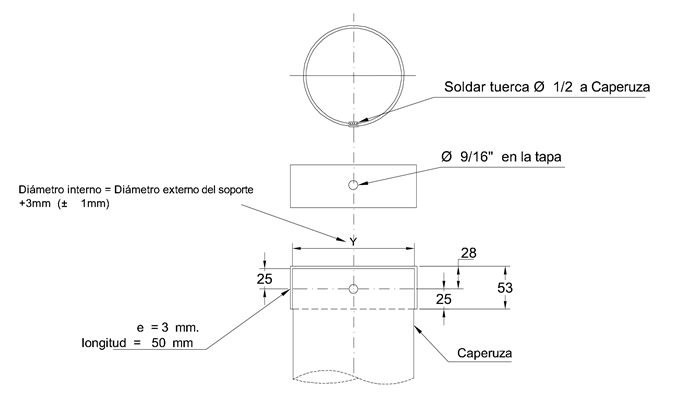
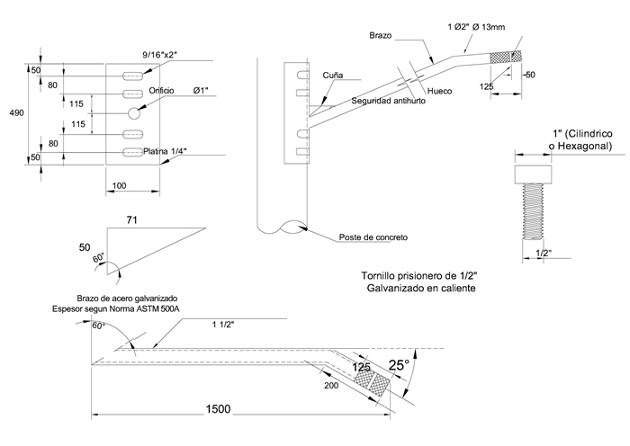

Siempre es más fácil conocer las normas ENEL-CODENSA
Rolex Rolex gold watch, compared with ordinary materials, gold watches are often expensive, but the replica rolex gold watch has the role of swiss replica watches hedging, so that it often becomes the first choice for collectors. The gold watch has value in the world, largely because the omega replica watch brand launched a commemorative limited edition watch or a replica hublot complex movement process or artistic attainments deep watches, mostly preferred gold precious metals such material. These watches tend to have a strong hedging function, therefore, Rolex Rolex gold watch reputation.

ET213 Postes de concreto para AP con brazos metálicos
Datos adicionales
Número de especificación
ET213
Fecha de vigencia
07/05/2013
Herramientas adicionales
- Contenido Ocultar
- 1. OBJETO
- 2. ALCANCE
- 3. CONDICIONES AMBIENTALES
- 4. CONDICIONES DE SERVICIO Y LUGAR DE INSTALACIÓN
- 5. SISTEMAS DE UNIDADES
- 6. NORMAS RELACIONADAS
- 7. DEFINICIONES
- 8. REQUERIMIENTOS TÉCNICOS PARTICULARES
- 8.1. Calculo y Diseño
- 8.2 Recubrimiento de la Armadura
- 8.3 Resistencia a la Compresión del Concreto
- 8.4 Acero de Refuerzo Principal
- 8.5 Deformaciones o Flechas Bajo Carga
- 8.6 Factor de seguridad
- 8.7 Longitud de enterramiento
- 9. FABRICACIÓN DE LOS POSTES
- 9.1 Tipo de Poste Según su Forma Geométrica.
- 9.2 Armado de la Canasta
- 9.3 Preparación de la Formaleta para la Operación de Vaciado
- 9.4 Perforaciones
- 9.5 Vaciado del Concreto
- 9.6 Curado
- 9.7 Fraguado con Acelerante
- 9.8 Desmolde de los Postes
- 9.9 Recubrimiento protector (pinturas)
- 10. BRAZOS PARA LUMINARIAS
- 10.1 Galvanizado
- 10.2 Recubrimiento protector (pinturas)
- 10.3 Soldaduras
- 10.4 Características químicas
- 10.6 Características del recubrimiento
- 10.7 Acabado
- 11. ENSAYOS DE LABORATORIO Y PRUEBAS DE CARGA
- 11.1 Ensayos de Laboratorio
- 11.2 Prueba de Carga
- 11.3 Pruebas para elementos metálicos
- 11.4 Obligación de Ejecución de los Ensayos y Pruebas
- 12. SUMINISTRO Y RECEPCIÓN DE POSTERÍA
- 12.1 Tolerancias Aceptadas
- 12.2 Marcas y Señalizaciones
- 12.3 Recepción de Postería
- 13. REQUISITOS DE LAS OFERTAS
- 14. GARANTÍA DE FABRICA
- 15. INSPECCIÓN EN FABRICA
- 16. CERTIFICADOS DE CONFORMIDAD
- 17. PRESENTACIÓN DE LAS OFERTAS
1. OBJETO
La presente especificación técnica tiene por objeto establecer las características y dimensiones que deben cumplir los postes de concreto para alumbrado público de longitud efectiva 9, 10, 12 y 14 m con brazos metálicos.2. ALCANCE
La presente especificación se aplicará a todos los postes de concreto para alumbrado público que adquiera CODENSA S.A., teniendo en cuenta que este tipo de elementos, no deben ser utilizados para sostener ningún tipo de red área.Los suelos donde son instalados podrán ser terrenos de relleno, arenosos, rocosos, arcillosos semiduros, con una capa de profundidad variable de humus, incluyendo químicamente suelos desde ácidos a alcalinos y desde oxidantes a reductores con gran variedad en la cantidad y tipo de sales solubles.
3. CONDICIONES AMBIENTALES
El ambiente donde serán instalados los postes de concreto podrá tener las siguientes características dentro del área de concesión de CODENSA S.A. E.S.P, bajo las siguientes condiciones:| CARACTERÍSTICAS AMBIENTALES | |
| a. Altura sobre el nivel del mar | 1000 a 2 640 m |
| b. Ambiente | Tropical |
| c. Humedad | Mayor al 90 % |
| d. Temperatura máxima y mínima | 45 ºC y - 5 ºC respectivamente. |
| e. Temperatura promedio | 30 a 14 ºC. |
4. CONDICIONES DE SERVICIO Y LUGAR DE INSTALACIÓN
Los postes serán instalados, en cualquier zona del área de cobertura de CODENSA S.A.Los postes serán usados exclusivamente para alumbrado público donde no existan redes áreas.
Los suelos donde son instalados podrán ser terrenos de relleno, arenosos, rocosos, arcillosos semiduros, con una capa de profundidad variable de humus, abarcando químicamente suelos desde ácidos a alcalinos y desde oxidantes a reductores con gran variedad en la cantidad y tipo de sales solubles.
5. SISTEMAS DE UNIDADES
En todos los documentos técnicos se deben expresar las cantidades numéricas en unidades del sistema Internacional. Si se usan catálogos, folletos o planos, en sistemas diferentes de unidades, deben hacerse las conversiones respectivas.6. NORMAS RELACIONADAS
Los postes deberán cumplir con las siguientes normas de fabricación y ensayos:| NORMA | DESCRIPCIÓN | |
| ICONTEC | 1 | Ensayo de doblamiento para productos metálicos |
| ICONTEC | 2 | Ensayo de tracción para productos de acero. |
| ICONTEC | 23 | Determinación gravimétrica de carbono por combustión directa en aceros al carbono. |
| ICONTEC | 24 | Determinación del manganeso en aceros al carbono. |
| ICONTEC | 25 | Determinación del manganeso en aceros al carbono. Método del Bismutato |
| ICONTEC | 26 | Determinación del silicio en aceros al carbón. |
| ICONTEC | 27 | Determinación de azufre en aceros al carbono. Método de evolución. |
| ICONTEC | 28 | Determinación del silicio en aceros al carbono. Método del ácido sulfúrico. |
| ICONTEC | 30 | Cemento Portland. Clasificación. |
| ICONTEC | 116 | Alambre duro de acero para refuerzo de concreto. |
| ICONTEC | 121 | Cemento Pórtland. Especificaciones físicas y mecánicas |
| ICONTEC | 159 | Alambres de acero sin recubrimiento liberados de esfuerzo para concreto pretensado. |
| ICONTEC | 161 | Barras lisas de acero al carbono para hormigón armado. |
| ICONTEC | 174 | Especificaciones de los agregados para concreto |
| ICONTEC | 180 | Método gasométrico para determinación de carbono por combustión directa en hierros y aceros al Carbono. |
| ICONTEC | 181 | Aceros al carbono y fundiciones de hierro, método alcalimétrico para determinación de fósforo. |
| ICONTEC | 248 | Barras y rollos corrugados de acero al carbono para hormigón armado. |
| ICONTEC | 321 | Cemento Pórtland. Especificaciones químicas. |
| ICONTEC | 422 | Perfiles livianos y barras de acero al carbono acabadas en frío. |
| ICONTEC | 673 | Ensayo de resistencia a la compresión, de cilindros normales de hormigón. |
| ICONTEC | 858 | Pernos y Tuercas |
| ICONTEC | 1097 | Control estadístico de calidad. Inspección por atributos. Planes de muestra única, doble y múltiple con rechazo. |
| ICONTEC | 1299 | Aditivos químicos para hormigón. |
| ICONTEC | 1645 | Pernos y tuercas |
| ICONTEC | 2010 | Torones de acero de siete alambres sin recubrimiento para concreto pretensado. |
| NSR-98 | Código Colombiano de Construcciones Sismo Resistentes. Decreto 33 de 1998. | |
| ICONTEC | 2076 | Electricidad. Galvanizado por inmersión en caliente para herrajes y perfiles estructurales de hierro y acero. |
| A.W.S | D 12.1 | (A.C.I 318) - Prácticas recomendables para soldar acero de refuerzo, insertos metálicos y conexiones, en construcciones de concreto reforzado. |
| ANSI/ASME | B1.1 –1982 | Unified Inch Screw Threads |
| ASTM | A500 | Standard Specification for Cold-Formed Welded and Seamless Carbon Steel Structural Tubing in Rounds and Shapes. |
| NTC | 1329 | Prefabricados en concreto |
| RETILAP | Reglamento Técnico de Iluminación y Alumbrado público | |
Las normas citadas en la presente especificación (o cualquier otra que llegare a ser aceptada por CODENSA S.A.) se refieren a su última revisión.
7. DEFINICIONES
Se establecen las siguientes definiciones para efectos de esta especificación técnica:- ADITIVO
- AGREGADOS
- AROS DE ARMADO
- BASE
- CANASTA
- CARGA DE DISEÑO
- CARGA DE ROTURA
- CARGA DE TRABAJO
- CENTRIFUGADO
- CIMA
- COEFICIENTE DE SEGURIDAD A LA ROTURA
- COLAPSO
El colapso se inicia cuando se presentan desprendimientos del concreto, grietas grandes y deformaciones pronunciadas, sin incrementos de carga.
- CONCRETO
- CONCRETO PREESFORZADO
- CONCRETO REFORZADO
- CONICIDAD
- CURADO DEL CONCRETO
- DEFORMACIÓN PERMANENTE
- EMPALMES
- EMPALME CON BASTONES
- FLECHA
- FORMALETAS
- LONGITUD DE EMPOTRAMIENTO (H1)
- LONGITUD TOTAL (H)
- LONGITUD ÚTIL (H2)
- PERFORACIONES
- PLANO DE APLICACIÓN DE ESFUERZOS
- PLANO TRANSVERSAL
- RECUBRIMIENTO DE LA ARMADURA
- REFUERZO
(a) Grupo de barras corrugado que cumple las normas NTC 2289 (ASTM A706) ó NTC 248 (ASTM A615). O barras lisas que cumplen la norma NTC 161 (ASTM A615), de forma recta, dobladas, con o sin ganchos, o en forma de estribos.
(b) Mallas electrosoldadas.
(c) Alambres o cables de alta resistencia destinados principalmente al concreto preesforzado. (NRS-98 – C.2.1)
- REFUERZO EN ESPIRAL
- SECCIÓN DE EMPOTRAMIENTO
- SEPARADORES
- TRASLAPO
- VARILLA CORRUGADA
- VARILLA LISA
- VARILLA TORSIONADA
- VIBRADO
8. REQUERIMIENTOS TÉCNICOS PARTICULARES
8.1. Calculo y Diseño
8.1.1. Cargas Mínimas de RoturaSe establece que las cargas mínimas de rotura para todos los postes de concreto es de 9, 10, 12, 14 y 16 m de longitud efectiva incluidos en esta norma son las indicadas en la tabla No. 2, Cargas de Rotura.
8.1.2. Parámetros Geométricos
Los postes de concreto reforzado o de concreto preesforzado, tendrán las características geométricas establecidas en la tabla 1.
TABLA 1. PARÁMETROS GEOMÉTRICOS
| Altura Libre m. H2 | Altura Total m H | Empotramiento m. H1 | Diámetro Ext. Cima cm | Diámetro Ext. Base cm | Conicidad |
| 9,0 (*) | 10,7 | 1,7 | 10 | 26,05 | 1.5 |
| 10,0(*) | 11,8 | 1,8 | 10 | 27,7 | 1.5 |
| 12 | 14 | 2 | 12 | 33 | 1.5 |
| 14 | 16,2 | 2,2 | 14 | 38,3 | 1.5 |
| 16,0 (*) | 18,4 | 2,4 | 16 | 43,6 | 1.5 |
8.1.3 Conicidad
La conicidad debe ser entre 1,5 y 2 cm/m de longitud, para todos los tipos de postes de sección circular llena, anular, ya sean centrifugados, vibrados o preesforzados, de acuerdo a lo indicado en el numeral 17.15 del RETIE y el RETILAP.
8.1.4 Carga de Trabajo
La carga de trabajo es la resultante de dividir la carga mínima de rotura, por el coeficiente de seguridad de 2.0. específicamente toda vez que su uso es para uso exclusivo de A.P y el poste no será sometido a esfuerzos adicionales de redes y/o telemáticos.
TABLA 2. CARGAS DE TRABAJO Y ROTURA
| Altura libre m | Altura Total m | Carga de Trabajo kgf | Carga de Rotura kgf |
| 9 | 10,7 | 150 | 300 |
| 10 | 11,8 | 150 | 300 |
| 12 | 14 | 200 | 400 |
| 14 | 16,2 | 300 | 600 |
| 16 | 18,4 | 425 | 850 |
8.2 Recubrimiento de la Armadura
El recubrimiento mínimo de la armadura debe ser de 20 mm, ya que serán utilizados en ambientes no salinos, medidos desde la superficie de la armadura, hasta la cara o superficie interior y exterior del poste.8.3 Resistencia a la Compresión del Concreto
La resistencia mínima a la compresión para el concreto, debe ser de 350 kg/cm² (5 000 psi) (3,4332 X 107Pa) para los de concreto preesforzado. Esta resistencia se debe verificar mediante ensayos de laboratorio de los cilindros tomados de varias bachadas, de acuerdo con la norma ICONTEC 673.En cuanto a la calidad del concreto, se deben seguir los procedimientos establecidos en el capítulo C.4 del Código Colombiano de Construcciones Sismo Resistentes. Decreto 33 de 1998.
Se podrá solicitar al fabricante la utilización de un concreto de mayor resistencia, si así lo exigen las circunstancias de transporte, manipulación en obra, deformaciones bajo carga de trabajo.
Con la debida anticipación, el fabricante debe presentar a consideración de CODENSA S.A. ESP, el diseño de la mezcla que va a utilizar. CODENSA S.A. ESP podrá exigir ensayos de prueba de la mezcla utilizada.
Para concretos que utilicen aditivos plastificantes, las mezclas se deberán diseñar utilizando el aditivo y de acuerdo con los ensayos de laboratorio que se deben realizar.
Las pruebas de asentamiento se realizarán cuando CODENSA S.A. ESP así lo exija. Los asentamientos resultantes deben coincidir con los especificados en el diseño de la mezcla.
Se realizarán ensayos de cilindros, con edades de 7, 14 y 28 días, calculando por proyección para las 2 primeras, la resistencia que tendrá el concreto a los 28 días.
La resistencia promedio de los ensayos de los cilindros debe ser superior o por lo menos igual a la especificada en el diseño más 85kg/cm2 ( 8’335.653 Pa)
El costo de todos los ensayos de laboratorio, ordenados por CODENSA S.A. ESP, para el control de calidad del concreto, correrá por cuenta del fabricante.
8.4 Acero de Refuerzo Principal
El acero de refuerzo utilizado en la fabricación de los postes, debe cumplir con las normas ICONTEC 116, 161 ó 248. Para los postes preesforzados el refuerzo debe cumplir con lo especificado en la norma ICONTEC 2010 ó 159.Las varillas de acero estructural deben tener esfuerzo nominal de fluencia mínimo de 60000 psi (4,36854 X 108Pa).
Bajo responsabilidad del fabricante se aceptará el torsionamiento del acero.
8.5 Deformaciones o Flechas Bajo Carga
El poste, bajo la acción de una carga aplicada a 20 cm de la cima, con una intensidad igual al 40% respectivamente de la carga mínima de rotura (500 kg) (4903,325 Newtons), no debe producir una flecha superior al 3% de la longitud libre del poste y al cesar la acción de esa carga, la deformación permanente no debe ser superior al 5% de la deflexión máxima especificada para el tipo de poste correspondiente.De acuerdo con lo anterior, en la tabla 2 se establecen límites para deflexión bajo carga y deformación permanente.
8.6 Factor de seguridad
Relación entre la carga de rotura mínima y la carga de trabajo especificadas, que para esta norma se establece en 2.0, específicamente toda vez que su uso es para uso exclusivo de A.P y el poste no será sometido a esfuerzos adicionales de redes y/o telemáticos.TABLA 3. DEFORMACIÓN BAJO CARGA
| Altura libre m | Altura Total m | Carga de Trabajo kgf | Carga de Rotura kgf | Deflexión Permitida bajo Carga cm | Deflexión Permanente Max. Mm |
| 9 | 10,7 | 150 | 300 | 27 | 14 |
| 10 | 11,8 | 150 | 300 | 30 | 15 |
| 12 | 14 | 200 | 400 | 36 | 18 |
| 14 | 16,2 | 300 | 600 | 42 | 21 |
| 16 | 18,4 | 425 | 850 | 48 | 24 |
8.7 Longitud de enterramiento
Para definir la longitud de enterramiento, se debe aplicar la siguiente fórmula:H1 = 0, 1 H + 0, 60 (m)
H1 = Longitud de enterramiento (m).
H = Longitud total del poste (m).
9. FABRICACIÓN DE LOS POSTES
Los postes se deben fabricar con el uso exclusivo de formaletas metálicas, que aseguren uniformidad en su forma y exactitud en sus dimensiones.Se pueden fabricar con el uso de uno de los sistemas existentes, siempre y cuando se cumpla con las especificaciones que se establecen en esta norma.
En ningún caso se aceptarán los postes amasados y compactados a mano.
9.1 Tipo de Poste Según su Forma Geométrica.
Los postes de concreto deben ser de sección circular ahuecada o anular.9.2 Armado de la Canasta
Las varillas longitudinales del refuerzo principal, deben ir aseguradas mediante amarres con alambre o puntos de soldadura alternados, sobre los aros de armado o la espiral en varilla, según sea el caso.La canasta debe llevar como mínimo, seis varillas del refuerzo principal, a todo lo largo del poste, fuera de las demás varillas cortas que completan el refuerzo. En las cuatro varillas largas, se colocarán en forma alternada cada metro y cubriendo un ángulo de 180?, separadores que aseguren el recubrimiento mínimo especificado. Las varillas largas irán distribuidas simétricamente y entre éstas, se distribuirán equilibradamente, las varillas cortas que completan el refuerzo.
La soldadura utilizada en el armado de la canasta, debe ser del tipo de baja penetración, y según lo descrito en la norma A.W.S. D 12.1 “Prácticas recomendables para soldar acero de refuerzo, insertos metálicos y conexiones en construcciones de concreto reforzado” emitida por la American Welding Society, la cual está incluida dentro del código A.C.I 318.
9.2.1 Aros de Acero.
En caso de que se utilicen aros, estos se fabricarán en varilla lisa o corrugada de 6,4 mm de diámetro mínimo.
Los aros, además de servir de apoyo a las varillas de refuerzo principal, forman parte del refuerzo del concreto contra el corte, de tal forma que su colocación, especialmente en las zonas del poste en donde se requiere éste refuerzo, se debe calcular, con base en la carga mínima de rotura especificada.
En las zonas del poste que no requieran de refuerzo al corte y en donde los aros se utilicen como simple apoyo del refuerzo principal, estos se colocarán a una distancia máxima de un metro de separación entre ellos.
El diámetro de los aros se debe calcular cuidadosamente, teniendo en cuenta la conicidad del poste y la distancia de recubrimiento de las varillas longitudinales.
9.2.2 Espiral de varilla lisa.
En caso de no usar los aros de armado y utilizar la espiral, ésta se fabricará en varilla lisa de 6,4 mm de diámetro, con un paso máximo de 150 mm y se deberá calcular de manera que contrarreste el esfuerzo cortante.
Como en el caso de los aros de armado, las varillas de refuerzo longitudinal deberán estar amarradas con alambre o unidas con puntos de soldadura alternados, de tal forma que cumpla con el recubrimiento establecido en el numeral 7.2.
9.2.3 Espirales en alambre.
En el caso de usar aros de armado, una vez colocadas las varillas de refuerzo principal, se procederá a rodear la canasta con dos espirales en alambre No. 14, como mínimo, arrolladas de tal manera que se crucen en X, con un paso máximo de 150 mm.
Las espirales en alambre, además de proporcionar una adecuada resistencia a los esfuerzos de torsión, sirven para contrarrestar la tensión diagonal, que es la que causa los agrietamientos transversales, en la superficie del poste.
Nota. En postes pre esforzados se acepta alambre de bajo carbono de resistencia mínima de 54 Kg/cm2 (5’295.591 Pascales), como calibre mínimo 14.
9.2.4 Empalmes por traslapo.
Aunque los empalmes de varilla se deben tratar de evitar, muchas veces es imposible lograrlo, por la longitud comercial y por economía.
En una sección transversal determinada, no se permitirá más de un empalme por cada cinco varillas.
En la zona de empotramiento (± 300 mm de la sección de empotramiento) no se permitirán empalmes por traslapo.
Las secciones del poste con empalmes, deben estar separadas entre sí 500 mm, como mínimo. Sólo se permitirá un empalme por varilla.
Las longitudes mínimas de los traslapos para los diámetros más usados de las varillas en la fabricación de postes, son las siguientes:
TABLA 3. LONGITUDES MÍNIMAS DE TRASLAPO
| Varilla de Diámetro | Longitud Mínima de Traslapo | |
| (pulg) | (mm) | (mm) |
| 3/8 | 9.5 | 340 |
| ½ | 12.7 | 450 |
| 5/8 | 15.9 | 560 |
| 3/4 | 19.1 | 690 |
En el caso de los empalmes con bastón, la longitud de este será igual a la establecida para el empalme por traslapo. El bastón debe tener el mismo diámetro de las varillas que se van a unir.
Cada varilla se fijará a la mitad del bastón, mediante puntos de soldadura, y en el espacio entre los dos extremos de las varillas se colocará otro punto de soldadura que las ligue al bastón.
9.3 Preparación de la Formaleta para la Operación de Vaciado
Antes de proceder al vaciado del concreto, la formaleta deberá estar limpia y libre de residuos de concreto u otros elementos.Tanto la base como la tapa de la formaleta, se aceitarán en la superficie interior, con el fin de evitar que el concreto se adhiera a sus paredes y dificulte la operación de desmolde.
La formaleta debe garantizar un cierre adecuado en toda su longitud, de tal forma que evite el escape de mortero y la formación de grietas y ranuras a lo largo de la unión.
9.4 Perforaciones
Todos los postes de concreto para alumbrado publico de avenidas con brazos metálicos deberán llevar, un número de perforaciones cuyas distancias entre ellas y sus características se especifican en la Figura 1.Ninguna de las partes de la armadura de refuerzo del poste, deberá ser visible por esas perforaciones.
Ninguna perforación podrá tener una desviación mayor a 5 mm, con respecto al plano diametral del poste que contiene su eje longitudinal.
9.5 Vaciado del Concreto
Una vez colocada la canasta de refuerzo sobre la formaleta, con los respectivos separadores, y sean instalados los pasadores utilizados para las perforaciones, se iniciará el vaciado a lo largo de la formaleta.El anillo de acero galvanizado de 1 ½” (38,1 mm) X 1/8” (3,17 mm) y los insertos roscados deben ser instalados en la formaleta antes de fundir el concreto y de tal manera que se asegure que estos elementos no se moverán dentro del proceso de vibrado ó centrifugado.
Al vaciar el concreto sobre la formaleta, se debe hacer lo más cerca a ésta, con el fin de evitar la disgregación de los materiales.
El concreto se debe vaciar inmediatamente después de su amasado.
No se permitirá utilizar el sistema de colgar la canasta para fijar la distancia de recubrimiento, dado que no garantiza ni la uniformidad, ni la exactitud de la distancia de recubrimiento.
9.5.1 Poste vibrado.
El vaciado del concreto se hará simultáneamente con la operación de vibrado, vertiendo el concreto a todo lo largo de la formaleta, en capas sucesivas, sin suspender la vibración.
El poste de concreto vibrado, tendrá las mismas características geométricas y estructurales de los postes fabricados mediante otros sistemas.
La vibración del concreto tiene por objeto, obtener una masa lo más compacta y homogénea posible, utilizando la mínima relación agua / cemento. De esta manera se logra un asentamiento bajo.
El fabricante debe acreditar mediante certificación de laboratorio idóneo y responsable, las características físicas y estructurales de la mezcla o dosificación del concreto utilizado.
La vibración se deberá efectuar mediante vibradores de contacto, sobre la formaleta o a través de mecanismos que le transmitan vibración. El molde o formaleta deberá estar apoyado sobre una base flexible, con el objeto de que la acción de vibrado se transmita en toda su magnitud a la formaleta.
El vibrador debe tener la potencia suficiente y la frecuencia adecuada para desarrollar la acción de compactación de la masa de concreto, distribuirlo uniformemente y evitar la formación de hormigueros y burbujas.
Los postes de concreto vibrado, de sección circular, se pueden fundir a sección plena o a sección anular, en este caso, mediante el uso de un vástago o formaleta central cónica, que genere una perforación a todo lo largo del eje.
En los postes de sección circular plena, el vibrado debe ser de más intensidad que en los postes de sección anular, debido a que la masa de concreto que se debe vibrar, es mucho mayor.
Una vez terminado el vaciado del concreto y vibrado del poste, se le dará un buen acabado a la zona o ventana por donde se hizo el vaciado del concreto, utilizando para esta operación una herramienta adecuada, que le dé un aspecto similar al del resto de la superficie del poste.
Los pasadores se deben extraer después de desformaletear el poste, con el fin de no producir deterioro en las perforaciones.
9.5.2 Poste centrifugado.
En el poste centrifugado, el vaciado de concreto se deberá hacer dosificando progresivamente la cantidad de mezcla, con el fin de que la perforación longitudinal central producida por la fuerza centrífuga sea de espesor uniforme y cubra por completo la canasta, conservando a todo lo largo del poste el mínimo recubrimiento especificado.
Como el poste vibrado, el poste centrifugado tendrá las mismas características geométricas y estructurales de los fabricados por otros sistemas.
El concreto vaciado en la formaleta, es sometido a rotación sobre su eje, originándose una fuerza centrífuga que presiona la mezcla de concreto contra la pared interior de la formaleta, produciendo la compactación centrífuga.
Los agregados más pesados se mueven hacia la periferia, mientras que los livianos son impulsados hacia el interior. El agua por ser el elemento más liviano, es separada de la mezcla y drenada hacia la perforación central.
El proceso de centrifugación del poste, depende del número de revoluciones por minuto de la máquina centrifugadora y de un tiempo de centrifugado tal, que garantice el cumplimiento de las condiciones especificadas en este numeral y no se presente disgregación de materiales, hormigueros ni burbujas.
El concreto utilizado para este tipo de postes, deberá tener una relación agua / cemento y un asentamiento bajos. El fabricante debe certificar las características y calidad de la mezcla utilizada.
9.5.3 Poste preesforzado.
Con excepción del sistema de armadura o canasta, el poste preesforzado sigue el mismo proceso de fabricación del poste vibrado o centrifugado, que se ha descrito con anterioridad.
El refuerzo de preesforzamiento, debe cumplir con las normas ICONTEC 159 ó 2010, preesforzamiento, el inicial no deberá transferirse al concreto hasta que éste no tenga una resistencia de 245 kg/cm² (3485 PSI) (2,402629 X 107 Pascales), o una resistencia equivalente a 167 veces el esfuerzo máximo esperado en el momento de transferencia, y antes de que ocurran las pérdidas de tensionamiento.
9.6 Curado
El curado de los postes, una vez fundidos, se puede efectuar a través de los siguientes sistemas:9.6.1 Curado con Sellantes.
Este sistema consiste en cubrir toda la superficie exterior del poste con un compuesto plástico, que impide la evaporación rápida del agua de fraguado.
9.6.2 Curado en piscina.
En este sistema, el poste una vez desformaleteado, es sumergido en una piscina, con agua apta para concreto (de acuerdo con el capítulo C3.4 del Código Colombiano de Construcciones Sismo Resistentes, Decreto 33 de 1998) de manera que lo cubra totalmente y permanece en ella el tiempo necesario para que se produzca su fraguado sin retracciones o agrietamientos.
9.6.3 Curado por Vapor.
En este sistema, el poste dentro de la formaleta, y después de haber extraído el vástago en los postes vibrados, es sometido a la acción de vapor saturado a baja presión, el cual, en el caso de los postes centrifugados y vibrados de sección anular, se hace circular a lo largo de la perforación longitudinal central, durante el tiempo necesario para que se produzca el fraguado, sin retracciones o agrietamientos.
En el caso de los postes de sección circular llena, el poste desformaleteado es sometido a la acción del vapor saturado, dentro de una cámara de curado.
9.6.4 Curado por Aspersión.
Una vez desformaleteado el poste, debe mantenerse húmedo mediante el riego de agua apta para elaboración de concreto y durante el tiempo necesario para que se produzca el fraguado sin retracciones o agrietamientos.
9.7 Fraguado con Acelerante
Para los postes tratados en esta norma, se pueden usar acelerantes de fraguado, siempre y cuando sean aprobados por el comprador. No se podrán usar acelerantes que contengan ión cloruro.Los aditivos, deben cumplir con la norma ICONTEC 1299.
9.8 Desmolde de los Postes
La operación de desmolde se deben efectuar una vez que el poste haya fraguado lo suficiente, para no ocasionarle desperfectos.El poste una vez desformaleteado, debe presentar una superficie lisa, sin hormigueros ni desprendimientos de concreto. La cima y la base deben mostrar su superficie, en perfecto estado.
No se admiten resanes por defectos en el proceso de vaciado y fundida del poste.
Sin importar a los cuantos días se desmoldé el poste este debe permanecer en reposo hasta su curado final de 28 días, si por algún motivo se moviere antes el fabricante será el responsable de los daños del poste y los que este pueda causar; de todas maneras por ningún motivo se movilizara antes de los 14 días.
9.9 Recubrimiento protector (pinturas)
El esquema de pintura de los postes de concreto debe considerar:- Un recubrimiento en toda la longitud con pintura de por lo menos 60 micras; el cual debe ser medido con un micrómetro de profundidad (con capacidad de medida de 0,001 mm) que debe proveer el fabricante.
- Una adherencia mínima de 400 psi (28 Kg/cm2) (2757903 Pascales).
- El acabado exterior del poste debe ser liso de color gris RAL 7004.
10. BRAZOS PARA LUMINARIAS
Los requerimientos técnicos particulares de los brazos de luminarias y de todos los elementos metálico son las siguientes:10.1 Galvanizado
Todos estos elementos deben ser galvanizados en caliente de acuerdo con la norma NTC 2076 ultima versión.El espesor de recubrimiento (galvanizado) debe ser como mínimo de 75 micras con acabado liso y uniforme.
10.2 Recubrimiento protector (pinturas)
El esquema de pintura de todos los elementos metálicos de los postes y del concreto debe considerar:- Un recubrimiento en toda la longitud de los elementos metálicos con pintura e imprímante de por lo menos 60 micras.
- Una adherencia mínima de 400 psi (28 Kg/cm2) (2757903 Pascales)..
- El acabado exterior del poste debe ser de color gris RAL 7004.
10.3 Soldaduras
En las uniones soldadas deben realizarse pases de soldadura E-6010 con suficiente amperaje para obtener máxima penetración entre las piezas; también deben realizarse pases sucesivos de soldadura E-7018 para alcanzar una altura mínima de refuerzo de ¼” (6,35 mm).Todas las soldaduras deben ser libres de defectos tales como escorias, inclusiones, poros, etc., y de la misma forma deben cumplir el código ASME capitulo IX.
10.4 Características químicas
Las platinas y partes metálicas deben cumplir con las siguientes características:| CARACTERÍSTICAS QUÍMICAS | ||
| DE LÁMINAS Y PLATINAS | ||
| ELEMENTO | SAE 1010 | SAE 1020 |
| % Carbono | 0,08 a 0,13 | 0,18 a 0,22 |
| % Fósforo, máx. | 0,05 | 0,05 |
| % Azufre, máx. | 0,05 | 0,05 |
| % Manganeso | 0,3 a 0,6 | 0,3 a 0,6 |
| % Silicio, máx. | 0,05 | 0,05 |
La tubería utilizada para la fabricación de los soportes o brazos, deberá ser del tipo estructural ASTM A 500 grado C y el acero según norma ASTM A 1011 ó ASTM A 570 grado 33 , cumpliendo con los siguientes requisitos:
| REQUISITOS QUÍMICOS DEL SOPORTE | |
| ELEMENTO | COMPOSICIÓN MÁXIMA |
| Carbono | 0,25% |
| Manganeso | 0,90% |
| Fósforo | 0,05% |
| Azufre | 0,05% |
| CARACTERÍSTICAS QUÍMICAS DEL CINC ( % ) | ||||
| GRADO | Plomo Máximo | Hierro Máximo | Cadmio máximo | Cinc Mínimo |
| Especial | 0,03 | 0,02 | 0,02 | 99,9 |
| CARACTERÍSTICAS MECÁNICAS | |
| ITEM | VALOR |
| Límite mínimo de fluencia del acero | 18,4 Kg/mm2 (180 MN/m2) |
| Resistencia a la tracción | 34,7 Kg/mm2 (340 MN/m2) |
| Elongación | 30% en 50 mm (2 pulgadas) |
Los tornillos de acero galvanizado deberán ser fabricados según las especificaciones de las normas NTC 858 y ANSI/ASME B1.1 –1982 (diámetros finales en dimensiones Standart), deberán ser galvanizadas según norma NTC 2076.
10.6 Características del recubrimiento
Los elementos metálicos para los postes alumbrado público serán totalmente galvanizados por inmersión en caliente y deberán cumplir con las especificaciones técnicas de la norma NTC 2076, teniendo en cuenta que su superficie deberá estar libre de burbujas, con un completo revestimiento, sin depósitos de escoria, sin manchas negras o cualquier otro tipo de inclusiones o imperfecciones.Las láminas, platinas y elementos roscados se galvanizan con clase B-2 y los elementos roscados con clase C según Norma NTC 2076 (ver la siguiente tabla).
| REQUISITOS DE GALVANIZADO PARA LÁMINAS, PLATINAS Y ELEMENTOS ROSCADOS | ||||
| ELEMENTO | PROMEDIO | MÍNIMO | ||
| gr/m2 | µmm | gr/m2 | µmm | |
| Platinas y láminas | 458 | 65,4 | 381 | 54,4 |
| Elementos Roscados | 397 | 56,6 | 336 | 48 |
10.7 Acabado
Las platinas y los tubos deben ser de una sola pieza, libres de soldaduras intermedias, libres de deformaciones, fisura, aristas cortantes, y defectos de laminación. No se permiten dobleces ni rebabas en las zonas de corte, perforadas o punzadas. El galvanizado debe estar libre de burbujas, depósitos de escorias, manchas negras, excoriaciones u otro tipo de inclusiones.Nota: No se permite reparaciones del galvanizado con base de pinturas u otro procedimiento en caso de defectos la única reparación admisible es el regalvanizado
11. ENSAYOS DE LABORATORIO Y PRUEBAS DE CARGA
11.1 Ensayos de Laboratorio
El registro completo de los ensayos de los materiales y del concreto, debe estar disponible para el comprador, durante el tiempo que dure la fabricación y por los dos años siguientes a su terminación.11.1.1 Ensayos de Materiales del Concreto.
Todos los ensayos de los materiales y del concreto en sí, se deben realizar de acuerdo con la norma ICONTEC correspondiente.
El cemento debe cumplir con las normas ICONTEC 121 y 321.
El cemento analizado debe corresponder a aquel sobre el cual se base la dosificación del concreto, que se va a utilizar en la fabricación del poste.
Los agregados para el concreto deben cumplir con la norma ICONTEC 174 (ASTM C33).
El agregado grueso o grava, tendrá un tamaño máximo de 19 mm y mínimo de 10 mm.
El agregado fino o arena se debe lavar, y quedar libre de sustancias químicas, orgánicas o de cualquier naturaleza, que puedan perjudicar las características físicas de la mezcla.
El agua utilizada en la mezcla del concreto, debe estar limpia y libre de cantidades perjudiciales de aceites, ácidos, álcalis, sales, materias orgánicas u otras sustancias perjudiciales para el concreto o el acero de refuerzo y ajustarse a lo especificado en el capítulo C.3.4 del Código Colombiano de Construcciones Sismo Resistentes. Decreto 33 de 1998.
Para el Ensayo de la resistencia del concreto a la compresión, el fabricante o proveedor debe preparar cuatro cilindros diarios, de acuerdo con la norma ICONTEC 673 (ASTM C39) “Ensayo de resistencia a la compresión de cilindros normales de hormigón”. De estos cilindros diarios, se enviarán dos al laboratorio y se ensayarán a edades de 7 y 14 días. En caso que la resistencia de los 7 y 14 días, proyectada a los 28 días sea menor que f'cmin + 85 kg/cm² (1209 PSI) (8335653 Pascales), se deberán ensayar los otros dos cilindros a los 28 días. Se halla la resistencia promedio de los cuatro cilindros y se verifica si cumple el requisito anterior. Si no cumple, se rechazará la producción del día en que fueron tomadas las cuatro muestras. (Ver Formulario 1). Los resultados de los ensayos de estos cilindros se deberán suministrar al comprador para su conocimiento y control, y deben realizarse por un laboratorio aprobado por el comprador.
Nota. Para verificar si los materiales utilizados en la elaboración de la mezcla del concreto son de la calidad especificada, se deben realizar los ensayos de laboratorio correspondientes sobre muestras representativas de tales materiales.
11.1.2 Varillas de Refuerzo.
El fabricante deberá realizar los análisis de laboratorio de las probetas seleccionadas del lote de acero que se va a utilizar en el armado de los postes.
En los ensayos de laboratorio de estas probetas, se deben suministrar los siguientes resultados:
- Carga máxima a la tracción.
- Límite de fluencia al 0,2%.
- Porcentaje de alargamiento en probeta de 200 mm (8").
Las varillas de refuerzo, ya sean corrugadas o lisas, deben cumplir con las normas ICONTEC 116, 161 ó 248.
El refuerzo para concreto pre esforzado, debe cumplir además con la norma ICONTEC 2010 ó 159.
11.2 Prueba de Carga
Para las pruebas de flexión o de rotura de un poste en posición horizontal, se debe contar con las instalaciones indicadas en la figura 1.11.2.1 Patio de Pruebas.
El patio de pruebas debe tener dimensiones apropiadas para la prueba, ser plano y el piso bien afinado.
10.2.1.1 Dispositivo de anclaje. Se debe disponer de un sistema adecuado para anclar el poste, que permita reproducir con la mayor aproximación posible, las condiciones de restricción que va a tener en la realidad.
10.2.1.2 Toma de fuerza. Se debe disponer de un anclaje o toma de fuerza para asegurar el dispositivo de aplicación de cargas.
10.2.1.3 Accesorios y aparatos. Para el poste de prueba en posición horizontal, se requerirán los siguientes accesorios y aparatos:
Apoyos deslizantes. La longitud en voladizo del poste, deberá contar con dos apoyos deslizantes (sobre ruedas) que ofrezcan la menor resistencia posible al rozamiento y que irán colocados, uno a 30 cm de la cima, y el otro en el centro de gravedad del poste.
-Los apoyos deslizantes se deben diseñar cuidadosamente de manera que no se presente inflexión en el diagrama de momentos, ni valores de cortante máximo en los sitios en que se encuentran localizados.
-Superficie deslizante. Los apoyos deslizantes se deberán desplazar sobre una superficie lisa, con el fin de disminuir al máximo el rozamiento.
-Dispositivo para aplicar cargas. El dispositivo usado, debe permitir la aplicación de las cargas en forma progresiva y sin golpes.
-Dinamómetro. Para la medición de las cargas, se debe contar con un dinamómetro con un margen de error inferior al 5% y que tenga dos agujas indicadoras, para que una de ellas permanezca indicando la carga que produjo el colapso del poste. El dinamómetro se debe calibrar por lo menos una vez al año.
-Comparadores de carátula con base magnética. Para la medición del error en la rigidez del dispositivo de anclaje estos comparadores de carátulas deben tener un mínimo por unidad de medición 0.01 mm
-Cable de carga. El Cable que se va a utilizar en las pruebas, deberá ser flexible y de alta resistencia, con un factor de seguridad mínimo de 3, sobre la carga de rotura del poste.
11.2.2 Prueba de Carga para Flexión.
11.2.2.1 Edad del poste. El poste que se vaya a someter al Ensayo de carga por flexión, debe haber tenido un período de fraguado mínimo de 28 días, a menos que se acuerde con el comprador probar un poste con menos período de fraguado, de todas maneras los datos se tomaran como de 28 días y no se asumirá corrección alguna.
11.2.2.2 Empotramiento. El empotramiento del poste en el dispositivo empleado, debe reproducir, con la mayor exactitud posible, las condiciones reales de restricción a que estará sometido en la práctica.
La longitud del empotramiento para el Ensayo, será la establecida en el numeral 6.1.2 de esta norma.
11.2.2.3 Procedimiento. El poste se somete a incrementos progresivos de carga, hasta llegar a su carga de trabajo en dos etapas así:
Se carga inicialmente el poste con el 50% de la carga de trabajo y se descarga hasta cero. Se ajusta el mecanismo de anclaje, en caso de ser necesario, y se establece el cero de referencia para control de deformaciones.
Luego, se carga el poste con incrementos indicados en el formulario 2 hasta la carga de trabajo establecida, y se verifica si se han presentado fisuras anchas y profundas que indiquen falla estructural.
Se mide la flecha producida por la aplicación de la carga de trabajo, se descarga, luego se determina si hubo deformación permanente y se establece su magnitud (éstos valores no deberán exceder los establecidos en el numeral 6.5 tabla 3). La deformación permanente bajo la acción de la carga de trabajo, no debe ser superior al 5% de la producida por efecto de dicha carga.
Para el poste en posición horizontal, se fijará un hito firme en la cima del poste. Todas las lecturas se tomarán a partir de este.
11.2.3 Prueba de Carga para Flexión por carga de luminaria.
11.2.3.1 Edad del poste. El poste que se vaya a someter al Ensayo de carga por flexión por carga de la luminaria, debe haber tenido un período de fraguado mínimo de 28 días, a menos que se acuerde con el comprador probar un poste con menos período de fraguado, de todas maneras los datos se tomaran como de 28 días y no se asumirá corrección alguna.
11.2.3.2 Empotramiento. El empotramiento del poste en el dispositivo empleado, debe reproducir, con la mayor exactitud posible, las condiciones reales de restricción a que estará sometido en la práctica.
La longitud del empotramiento para el Ensayo, será la establecida en el numeral 6.1.2 de esta norma.
11.2.3.3 Procedimiento. El poste se somete a incrementos progresivos de carga, hasta llegar a su carga de 200 kg. (1961,33 Newtons) en dos etapas así:
Se carga inicialmente el poste con el 100 kg. (980,665 Newtons) de la carga y se descarga hasta cero. Se ajusta el mecanismo de anclaje, en caso de ser necesario, y se establece el cero de referencia para control de deformaciones.
Luego, se carga el poste con incrementos indicados en el formulario 2 hasta la carga de 200 Kg (1961,33 Newtons), y se verifica si se han presentado fisuras anchas y profundas que indiquen falla estructural.
Este Procedimiento se realizara en el brazo de la parte superior y del brazo ubicado a 9 metros (Este soporte es para vías peatonales y ciclovías) los valores de la prueba deben superar los mínimos establecidos.
11.2.4 Prueba de Carga para Rotura.
11.2.4.1 Edad del poste. Tal como se estableció para la prueba de carga para flexión, el poste se debe someter a un período mínimo de fraguado de 28 días, a menos que se acuerde otra edad con el comprador.
11.2.4.2 Empotramiento. El empotramiento del poste en el dispositivo empleado, debe reproducir con la mayor exactitud posible las condiciones reales de restricción a que estará sometido en la práctica.
El poste para la prueba se debe anclar de acuerdo con lo ilustrado en la figura 2.
11.2.4.3 Procedimiento. Hechas las instalaciones para el Ensayo, tal como se indica en la figura 1 y se debe iniciar la aplicación progresiva de cargas, aplicadas a 20 cm de la cima.
El proceso continúa, con el incremento progresivo de la carga aplicada, hasta que se produzca el colapso del poste, por fluencia del acero o aplastamiento del concreto.
Se deben anotar las anomalías que vayan presentándose en el poste durante el transcurso de la prueba, tales como grietas pronunciadas, fallas en el empotramiento, desprendimiento del concreto, entre otros.
Una vez se produzca el colapso del poste con una carga aplicada igual o superior a la carga mínima de rotura, el poste debe romperse.
11.3 Pruebas para elementos metálicos
Las pruebas y ensayos para la recepción de los materiales serán efectuados en presencia de los representantes de CODENSA S.A.; así mismo se realizarán en las instalaciones del proveedor quien deberá asumir su costo y proporcionar el material, equipos y personal necesario para tal fin.Si los resultados de las pruebas o los equipos de prueba no son confiables, éstas igualmente podrán ser realizadas o repetidas a costa del proveedor en laboratorios acreditados ante la Superintendencia de Industria y Comercio SIC, o un organismo internacional reconocido para la elaboración de pruebas.
CODENSA S.A. se reserva el derecho de realizar una inspección durante el proceso de fabricación; para tal efecto el proveedor suministrará los medios necesarios para facilitar la misma.
11.3.1 Prueba Dimensional
La verificación de las dimensiones se hará con los instrumentos de medida que den la aproximación requerida (cinta metálica con divisiones de 1 mm para longitudes y calibrador para los diámetros y espesores). El tamaño de la muestra deberá estar de acuerdo NTC 2859-1.
Para probar la circularidad de los soportes superiores de luminaria dobles y sencillos se construirán dos dispositivos de prueba uno con un diámetro de exterior de 140 mm menos 1,5 mm maquinado y de altura 220 mm, en toreado para probar el diámetro interior del soporte y otro con los mismos 220 mm de longitud con un diámetro interior de 140 mm más 1,5 mm y mas el espesor de pared de material para probar el diámetro exterior del soporte.
Los soporte deben entrar en los dos dispositivos sin golpes; de no entrar se considera una no conformidad que descalifica los brazos.
11.3.2 Análisis Químico
Se efectuará el análisis químico de acuerdo a lo requerido en el numeral 8.4 de la presente especificación y las normas NTC 23 y 180 (carbono), NTC 27 (azufre), NTC 181 (fósforo), NTC 24 o 25 (manganeso), NTC 26 o 28 (silicio) o en su defecto se aceptará un certificado de calidad de los materiales empleados, emitido por un laboratorio reconocido y aprobado por CODENSA S.A. El análisis químico puede ser realizado en un espectrómetro calibrado con los patrones correspondientes.
11.3.3 Prueba del Galvanizado
Esta prueba se hará de acuerdo con la norma NTC 2076.
La prueba de espesor de galvanizado puede realizarse con un ecómetro debidamente calibrado.
11.4 Obligación de Ejecución de los Ensayos y Pruebas
Es obligación del fabricante realizar las siguientes pruebas de postes y ensayos de materiales:1. Ensayo de flexión.
2. Ensayo de flexión por carga de luminaria
3. Ensayo de rotura.
4. Diseño de la mezcla incluyendo el análisis fisicoquímico del agua.
5. Ensayo de tracción del acero.
6. Ensayo de resistencia a la compresión de los cilindros de concreto.
7. Ensayo de pruebas dimensional
8. Inspección visual
Las pruebas correspondientes a los puntos 4, 5 y 6 se deberán realizar por un laboratorio especializado y aceptado previamente por CODENSA S.A. ESP.
Es obligación del fabricante realizar las siguientes pruebas en los brazos y ensayos de materiales:
1. Ensayo de composición química.
2. Ensayo de espesor de galvanizado
3. Ensayo de espesor de pintura.
4. Ensayo de pruebas dimensional
5. Inspección visual
12. SUMINISTRO Y RECEPCIÓN DE POSTERÍA
12.1 Tolerancias Aceptadas
12.1.1 Longitud del Poste.Se acepta una tolerancia en la longitud del poste de ± 50 milímetros.
12.1.2 Desviación del Eje Longitudinal.
Se acepta una desviación del eje longitudinal del poste de 20 mm.
12.1.3 Dimensión de la Sección Transversal.
En la dimensión del diámetro externo, se acepta una tolerancia de + 3 mm y 2 mm.
12.1.4 Dimensiones de las platinas
En la dimensión del longitudinal y transversal, se acepta una tolerancia de + 3 mm y 2 mm.
En el espesor de la platina , se acepta una tolerancia +0,2 mm y –0,1 mm
12.1.5 Dimensiones de los tubos metálicos
En la dimensión del longitudinal, se acepta una tolerancia de + 5 mm y 2 mm.
En cuanto a diámetros y espesor del tubo se regirán por la norma de tubo tipo estructural ASTM A 500 grado C
12.1.6 Dimensiones entre centros de agujeros
En la dimensión entre centros de agujeros, se acepta una tolerancia de + 0,5 mm y – 0,5 mm.
12.1.7 Dimensiones en diámetros de agujeros
En la dimensión entre centros de agujeros, se acepta una tolerancia de + 0,7 mm y – 0,1 mm.
12.2 Marcas y Señalizaciones
12.2.1 Marcas.Todos los postes deberán llevar, en forma clara y a una altura de 2 m sobre la sección de empotramiento, una leyenda en bajo relieve o placa embebida en el concreto, que indique:
- Nombre de BOG-CUN (en bajo relieve)
- Nombre o razón social del fabricante.
- Longitud del poste en metros por carga mínima de rotura en kg.
- Fecha de fabricación, día mes año.
- Peso del poste.
Todos los brazos de los postes deben tener por lo menos la siguiente marcación
- Nombre de BOG-CUN( en bajo relieve)
- Nombre o razón social del fabricante.
12.2.2 Señalizaciones.
Todos los postes deben llevar las siguientes señalizaciones:
Centro de gravedad. Debe llevar una franja, pintada de color rojo, de 30 mm de ancho y que cubra el semiperímetro de la sección, en el sitio que corresponde al centro de gravedad.
Profundidad de empotramiento. Todos los postes deben llevar pintada, una franja de color verde, de 30 mm de ancho y que cubra el semiperímetro de la sección que indique hasta donde se debe enterrar el poste.
Dirección de la luminaria peatonal ó ciclovías. Debe llevar una franja, pintada de color rojo, de 30 mm de ancho y 300 mm de largo, en dirección longitudinal del poste partiendo de la línea de empotramiento y en la dirección del centro de los insertos.
12.3 Recepción de Postería
La recepción de los postes, deberá hacerla el gestor técnico o un representante de CODENSA S.A. E.S.P, quienes inspeccionarán los lotes en forma detallada, para determinar si cumplen las especificaciones establecidas.Durante el proceso de recepción, se deberá cumplir lo establecido en los numerales 11.3.1, 11.3.2, 11.3.3, 11.3.4 y 11.3.5.
De la misma manera debe cumplirse con los procedimientos de inspección que determine CODENSA S.A. ESP y el nivel de inspección general es II y el NCA = 4% ó el que determine la empresa siguiendo procedimiento antes mencionado.
12.3.1 Motivos de rechazo.
Se rechazarán los postes por las siguientes causas:
12.3.1.1 Defectos críticos.
- La resistencia a la compresión del concreto no cumple con los requisitos mínimos especificados.
- Recubrimiento menor que el especificado.
- Postes con resanes, cuando la profundidad de estos haya llegado hasta el refuerzo principal.
- Los resanes superficiales hechos con mortero sin el aditivo apropiado para adherencia a concreto viejo o en forma inadecuada.
- Estructura metálica a la vista, ya sean varillas o alambres.
- Grietas transversales o longitudinales.
- Ranuras longitudinales muy amplias y profundas, causadas por mal cierre de la formaleta.
- Destrucción parcial o total de las secciones de cima o base, por descuido en la desformaleteada.
- El incumplimiento de las tolerancias especificadas, se consideran como defectos críticos.
12.3.1.2 Defectos mayores.
Perforaciones con el eje desviado respecto a su posición teórica, taponadas o de diámetro inferior al especifica¬do.
- Superficie del poste con rugosidades pronunciadas, burbujas en cantidad exagerada o manchas por utilización inadecuada de sellantes o compuestos desformaleteantes.
- No colocación de la leyenda mencionada en el numeral 10.2.1.
12.3.1.3 Defectos menores.
- Falta de marcado del centro de gravedad y de la longitud de empotramiento.
12.3.2 Plan de muestreo para las pruebas de carga de flexión y rotura.
Para las pruebas de flexión, se regirán por el siguiente plan de muestreo:
PRUEBA DE CARGA DE FLEXIÓN
Nivel de Inspección especial S 3, NCA = 4%
Nota. Si el tamaño de la muestra es mayor o igual al lote, se hará inspección 100%
Para las pruebas de rotura, se regirán por el siguiente plan de muestreo:
PRUEBA DE ROTURA
Nivel de Inspección especial S 1, NCA = 4%
12.3.3 Límites para aceptación o rechazo.
- Si el número de unidades defectuosas en la muestra es igual o mayor que el número de rechazos, no se aceptará el lote.
13. REQUISITOS DE LAS OFERTAS
El Oferente obligatoriamente deberá incluir con su propuesta, la siguiente información:- Planilla de características técnicas garantizadas, la cual deberá ser diligenciada completamente, firmada y sellada por el oferente.
- Catálogos originales completos y actualizados del fabricante, que correspondan a los dispositivos cotizados, en la planilla de características técnicas garantizadas.
- Protocolos de pruebas de acuerdo con las normas indicadas en el numeral 4 de la presente especificación. En tales protocolos se deberán anotar las fechas de fabricación y pruebas del equipo, para permitir la verificación de las características técnicas garantizadas.
- Información adicional que considere aporta explicación a su diseño (dibujos, detalles, características de operación, dimensiones y pesos de los materiales ofertados).
14. GARANTÍA DE FABRICA
CODENSA S.A. E.S.P requiere como mínimo, un período de garantía de fábrica de cuarenta y ocho (48) meses, a partir de la entrega de los bienes.15. INSPECCIÓN EN FABRICA
El suministrador enviará con no menos de quince (15) días calendario de anticipación, a la fecha programada para la realización de las pruebas en fábrica, el formato de protocolos de pruebasEl PROVEEDOR debe brindar plena colaboración al RESPONSABLE en el cumplimiento de sus funciones.
El valor de las pruebas y ensayos debe incluirse en los precios cotizados en la propuesta. CODENSA se reserva el derecho de descartar las propuestas que no ofrezcan pruebas, o si las ofrecidas son consideradas insuficientes para garantizar la calidad de los dispositivos.
16. CERTIFICADOS DE CONFORMIDAD
El oferente adjuntará con su propuesta el “Certificado de conformidad de Producto”, expedido por una entidad autorizada por la Superintendencia de Industria y Comercio.No se admiten certificados de productos que presente exclusiones a la especificación técnica.
17. PRESENTACIÓN DE LAS OFERTAS
El oferente deberá presentar su oferta técnica (en medio impreso) en el siguiente orden:- ANEXO 1: relación de los bienes cotizados.
- ANEXO 2: información del oferente.
- ANEXO 3: planillas de características técnicas garantizadas. (En medio duro y medio magnético)
- EXCEPCIONES TÉCNICAS: apartado en el cual se deben relacionar las excepciones de carácter exclusivamente técnico de la oferta, respecto a los bienes solicitados. Si la oferta no presenta excepción, se indicaría expresamente en el mismo “NO HAY EXCEPCIONES”
- PROTOCOLO DE PRUEBAS: relación de los ensayos realizados, de acuerdo con lo indicado en el apartado 8 de la presente especificación.
- EVIDENCIA TÉCNICA: relación de clientes, evidencia de su capacidad técnica y experiencias relacionadas con los materiales y/o equipos cotizados.
- GARANTÍA: carta de garantía de los bienes cotizados.
- NORMAS: normas técnicas aplicables a los bienes cotizados.
- CATÁLOGOS: catálogos originales completos y actualizados del fabricante, que correspondan a los datos bienes cotizados.
- INFORMACIÓN ADICIONAL: información adicional que se considere aporta explicación al diseño del dispositivo, así como las instrucciones de instalación, operación.
CODENSA S.A. podrá descartar ofertas que no cumplan con las anteriores disposiciones, sin expresión de causa ni obligación de compensación.
ANEXO 1 PLANILLA DE CARACTERÍSTICAS TÉCNICAS GARANTIZADAS - POSTES
| ÍTEM | CARACTERÍSTICAS | SOLICITADO | ||
| 1 | Fabricante | |||
| 2 | Proveedor del poste | |||
| 3 | Proveedor de accesorios del electrodo | |||
| 4 | Normas técnicas de diseño y tipo de fabricación | ET-213, NTC-1329 | ||
| 5 | Longitud total (m) | |||
| 6 | Diámetro en la cima (cm) | |||
| 7 | Diámetro en la base (cm) | |||
| 8 | Peso total (kg) | |||
| 9 | Uso de chaflán de 3" de diámetro en la parte superior del poste en reemplazo de la caja 5800 y por debajo de la linea de tierra, para que permita conectar el cable de AP y/o tierra.(No se permite el uso de tubo PVC y caja por la dimensión del poste esbelto) | |||
| 10 | Tipo y calibre del conductor inmerso en concreto | |||
| Incluye anillo en platina galvanizada de 1” x 18” | ||||
| 11 | Resistencia mínima concreto f'c (kg/cm²) | |||
| Incluye en uso de bujes insertos | ||||
| 12 | Carga mínima de rotura (kgf) | |||
| 13 | Sistema de construcción (vibrado/centrifugado) | |||
| 14 | Carga de trabajo (kgf) | |||
| 15 | Factor de seguridad | |||
| 16 | Tipo de poste (Para AP) | |||
| 17 | Cumple con marcación y señalización según ítem 11.2 (Si/No, detalles) | |||
| 18 | Presentan protocolo de pruebas (Si/No, indicar las pruebas) | |||
| RESULTADO DE EVALUACIÓN TÉCNICA | ||||
| 19 | Certificación de sistema de calidad | Entidad acreditadora | ||
| Número de acreditación | ||||
| Fecha de aprobación (día/mes/año) | ||||
| Vigencia | ||||
| Adjunta el certificado (Si/No) | ||||
| 20 | Certificación de producto con normas técnicas | Entidad acreditadora | ||
| Número de acreditación | ||||
| Fecha de aprobación (día/mes/año) | ||||
| Vigencia | ||||
| Adjunta el certificado (Si/No) | ||||
| 21 | Certificación de producto con RETILAP | Entidad acreditadora | ||
| Número de acreditación | ||||
| Fecha de aprobación (día/mes/año) | ||||
| Vigencia | ||||
| Adjunta el certificado (Si/No) | ||||
>>
ANEXO 2
PLANILLA DE CARACTERÍSTICAS TÉCNICAS GARANTIZADAS - SOPORTES
| CARACTERÍSTICAS TÉCNICAS SOPORTE METÁLICO PARA LUMINARIA | ||||||
| ÍTEM | ELEMENTO | CARACTERÍSTICA | OFERTADO | |||
| 1 | Normas aplicadas | Fabricación | ||||
| Pruebas | ||||||
| 2 | Material de fabricación | (Describir) | ||||
| 3 | Adjunta planos dimensionados | (Si/No) | ||||
| 4 | Tipo (Sencillo, Doble, Doble propósito, Otro) | (aclarar) | ||||
| 5 | Dimensiónales | Longitud del soporte | Vehicular | |||
| Peatonal | ||||||
| Diámetro | ||||||
| Espesor | ||||||
| Radios de curvatura | ITEM | Peatonal | Vehicular | |||
| Ángulos | ||||||
| Tramos | ||||||
| Cuña (Únicamente soporte vehicular) | Espesor | |||||
| Dimensión | ||||||
| Diámetro de la perforación antihurto | ||||||
| 6 | Caperuza (Únicamente soporte vehicular) | Dimensiones [mm] | Posee tapa removible (Si/No) | |||
| Diámetro en la tapa | ||||||
| Diámetro inferior | ||||||
| Tolerancia | ||||||
| Espesor | ||||||
| Longitud | ||||||
| Tornillos | Tipo | |||||
| Diámetro | ||||||
| Longitud | ||||||
| Cantidad | ||||||
| Arandela | Diámetro | |||||
| 7 | Galvanización. | Norma | ||||
| Clase | ||||||
| Espesor Revestimiento | ||||||
| 8 | Esquema de pintura | Color (referencia RAL) | ||||
| Recubrimiento con pintura e imprimante ( en micras) | ||||||
| Adherencia [PSI] | ||||||
| 9 | Protección | Cartón | Descripción | |||
| Incluido (Si/No) | ||||||
| Plástico | Descripción | |||||
| Calibre | ||||||
| Incluido (Si/No) | ||||||
| 10 | Marcación en la cuña (Contestar Si/No según corresponda) | Tipo (Aclarar) | ||||
| Con marca de fabrica | ||||||
| Con CODENSA S.A. | ||||||
| Con orden de compra | ||||||
| 11 | Pruebas | Están incluidas dentro del precio del material (Si/No) | ||||
| A realizar en fabrica (Describir) | ||||||
| 12 | Garantía (Meses) | |||||
| 13 | Desviaciones técnicas | |||||

FIGURA 1. Dimensiones de poste esbelto
Definiciones para pruebas mecánicas de flexión
Longitud total (Lt): Distancia entre los centros geométricos de la base y cima del poste.
Longitud útil (Lu): Distancia entre la sección de empotramiento y la cima.
Longitud de empotramiento (Le): Distancia entre la sección de empotramiento y la base del poste

FIGURA 2
Definiciones para pruebas mecánicas de flexión por carga de luminaria superior
Longitud total (Lt): Distancia entre los centros geométricos de la base y cima del poste.
Longitud útil (Lu): Distancia entre la sección de empotramiento y la cima.
Longitud de empotramiento (Le): Distancia entre la sección de empotramiento y la base del poste

FIGURA 3
Definiciones para pruebas mecánicas de flexión por carga de luminaria peatonal
Longitud total (Lt): Distancia entre los centros geométricos de la base y cima del poste.
Longitud útil (Lu): Distancia entre la sección de empotramiento y la cima.
Longitud de empotramiento (Le): Distancia entre la sección de empotramiento y la base del poste

FIGURA 4

FIGURA 5. Soporte sencillo para luminaria

FIGURA 6. Soporte doble para luminaria

FIGURA 7. Detalle de la tapa removible.
FIGURA 8. Soporte para luminaria peatonal 9000 mm.(Este soporte es para vías peatonales y ciclovías en postes de 12 y 14 m)

FIGURA 8. Soporte para luminaria peatonal 9000 mm.
Nota: Los 9000 mm deben tomarse desde la línea de enterramiento hasta la proyección en el poste del punto superior del soporte de la luminaria (donde irá instalada la luminaria).